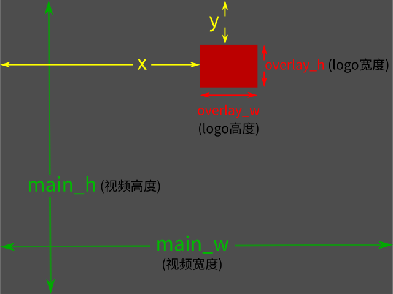

FFmpeg应用参考
- 为啥要了解FFmpeg？因为有些时候FFmpeg明显快很多！
很简单，按下面第6个示例，给视频加个logo水印，先用常用的视频剪辑工具做，再用FFmpeg做，然后对比一下二者的速度、质量、生成文件的体积，就会发现FFmpeg的好处了。
FFmpeg在处理音视频时效率非常高，对于注重效率和文件体积的情况有明显效果。如果您经常剪辑视频文件，那么FFmpeg非常适合作为剪辑工具的补充来配合使用。本文尝试通过一些实例来演示FFmpeg的使用方法。
{kind=link}
文件格式、封装格式、编码格式(压缩格式)、视频格式；编码、解码；转码
一、文件格式、封装格式、编码格式
mp4不是编码格式，而是封装格式。
我们通常所说的mp4视频，或者mp4格式视频，都是指封装为mp4的视频。习惯上，我们把mp4格式理解为文件格式，这其实是不正确的或者不精确的理解，因为文件格式无法精确定义视频。
(文件格式方面的混淆，应该是源于Windows系统。Windows系统中文件格式通常专指文件名称的后缀，比如video.mp4，文件格式就是mp4；而Linux系统中，文件名称不需要后缀，比如把video.mp4重命名为video，系统完全能正确识别为mp4视频。不同系统间的这个差异导致文件格式这个描述不适用于视频文件。)
二、压缩格式
视频的编码格式也叫压缩格式，有点类同于图像的压缩。
例如，1920x1080的JPEG图片，压缩是通过JPEG压缩算法来实现的。而1920x1080的视频，不是通过JPEG算法，而是通过编码器进行计算压缩。图片压缩与视频压缩的实现在本质上是一个意思，只不过视频的压缩算法(即编码器)，考虑的技术细节更多而已，所以也就比图片压缩显得更复杂一些。
正确或更精确的理解，我们可以从封装格式和编码格式这两个角度来描述视频文件。
上面讨论的编码与封装，正确的理解是：封装格式为mp4的视频可能有多种编码格式，比如编码为h.264格式的mp4视频，或者编码为h.265格式的mp4视频。
三、视频格式
视频格式这个描述，与文件格式的描述相近，但比文件格式更精确。讨论视频时如果提到视频格式，那么通常要同时指明编码格式和封装格式两个参数。比如对方问你能提供什么样的视频格式文件，回答时最好说h.264的mp4文件，而不是简单回答mp4文件。
典型案例：Firefox ESR 102.15在播放h.265编码的mp4时，只有声音没有画面，播放h.264编码的mp4则声音画面都正常。
四、编码、解码
不同编码格式的mp4视频，创建或编辑或播放时，对硬件和软件要求不同。
想用显卡来创建h.265格式的mp4，需要显卡硬件支持h.265编码；创建视频即视频的编码过程，或者视频的压缩过程。
想播放h.265格式的mp4视频，需要播放器支持h.265格式解码；播放视频即视频的解码过程，或者视频的解压缩过程。
编辑视频，通常是先解码，再编码，即下面提到的转码。
使用CPU编码/解码，通常叫做软编码/软解码；使用GPU编码/解码，通常叫做硬编码/硬解码。有的电视盒子上会标4k硬解，其实就表示有专门用于硬解码的视频解码芯片，功能类似于显卡。
五、转码
转码：对已有的视频重新编码，就是转码。转码的过程其实就是先解码原视频，再把视频编码为新视频。转码使用的编码格式，可能与视频现有的编码格式相同，也可能不同。如果相同，那么不使用编码器，直接copy，转码的过程就会非常快(命令参数为-c copy)；直接copy等同于不转码也不编码。
对视频添加水印类的操作，必须转码(先解码再重新编码)，不能使用-c copy参数，因为视频的画面内容已经发生变化。即只要视频的画面内容有变化，就必须转码(先解码再重新编码)。如果只是从一个视频上截取其中一段下来，那么截取下来的那一段，画面与原视频其实完全相同，这个过程就不需要转码，等同于直接拷贝，速度会非常快。
注1：封装格式除了mp4，还有MKV、AVI、3GP、WebM、QuickTime等。
注2：编码格式除了h.264和h.265，还有AV1、QuickTime、DVI、WMV等。
注3：可以把封装格式理解为商品的外包装，编码格式理解为商品本身的结构。
注4：封装格式与编码格式不能随意搭配，比如不能用mp4来封装wmv。
注5：当下流行的是h.264编码格式的mp4视频。
注6：以上讨论内容，不仅适用于FFmpeg，也适用于其它视频剪辑软件。
FFmpeg的全称是Fast Forward mpeg。(mpeg = moving picture experts group)
- FFmpeg语法通用格式：
FFmpeg命令后面的参数都是成对的，比如-i /dev/shm/test.mp4，其中-i表示要输入一个文件，而后面的/dev/shm/test.mp4则表示输入文件的路径及文件名。这些成对的参数可以有多对，其作用就是告诉ffmpeg要干什么和怎么干，比如一对参数中前面的-i告诉ffmpeg要输入文件，那么后面紧接着就要说明输入文件的文件名及文件位置。
正常情况下，ffmpeg命令应该长下面这样：
ffmpeg -i old.mp4 -flag action new.mp4
上面命令中：
ffmpeg：表示执行ffmpeg命令
-i old.mp4：表示输入的文件是input_file.mp4 (可以是其它格式，比如.mov)
-flag action：表示对输入文件做的操作，-flat是操作名，action是操作内容
new.mp4：表示操作完成输出的文件名为new.mp4 (可以是其它格式，如.mov)
应用示例：
裁切视频的画面尺寸(Nvidia显卡转码)：
ffmpeg -i old.mp4 -vf crop='576:324:72:428' -c:v h264_nvenc newGPU.mp4生成的新视频的尺寸为576x324，从原视频的X=72，Y=428位置为原点开始裁切。
-c:v h264_nvenc表示使用Nvidia显卡h.264编码；如果想使用Nvidia显卡h.265编码，把h264_nvenc改为hevc_nvenc即可。
上面的命令是使用Nvidia显卡转码，下面改为使用CPU转码：
ffmpeg -i old.mp4 -vf crop='576:324:72:428' -c:v libx264 newCPU.mp4-c:v libx264表示使用CPU转码，编码器为h.264。
如果想让CPU转h.265，把libx264改成libx265即可。
GPU和CPU的区别是，GPU比CPU快近一倍，但GPU生成的视频文件体积比CPU的大很多，二者质量基本相同。换句话说，相同画面质量下，CPU编码的文件体积小很多；相同体积下，GPU编码的文件，画面质量会稍差一些。
GPU硬编码相比CPU，使用时偶尔会有一些小小的限制，原因是，GPU编码通过硬件实现，硬件已经固定了，无法随意修改；而CPU编码通过软件实现，软件是代码，代码是可以随意修改的。
下面命令指定了码率为1M；减小码率，可以有效减小视频体积，但画面质量有可能变差：
ffmpeg -i old.mp4 -vf crop='1048:587:0:70' -c:v h264_nvenc -b:v 1M newGPU.mp4不指定码率：
ffmpeg -i old.mp4 -vf crop='1048:587:0:70' -c:v h264_nvenc newGPU.mp4视频的码率、比特率，表示视频压缩的等级。这有点像JPEG图像，压缩得越小，图片质量就越差。对于视频，码率即单位时间传输的数据量。这个数据量越小，画面质量越差，分辨率固定。
分割视频：
ffmpeg -i old1.mp4 -ss 00:00:08 -to 01:50 -c copy new1.mp4 ffmpeg -i old2.mp4 -ss 00:00:03 -c copy -t 00:02:48 new2.mp4 ffmpeg -i old3.mp4 -ss 00:00:03 -t 00:02:48 -c:v h264_nvenc new3.mp4
第一条命令是把视频old1.mp4的第8秒到1分50秒这一段截取出来，保存为新文件new1.mp4；由于不转码(-c copy)，所以速度很快，几乎瞬间完成。
第二条命令是将视频old2.mp4从00:00:03处开始提取出2分48秒，提取出的新视频文件名称是new2.mp4。不转码，几乎是瞬间完成。
第三条命令是将视频old3.mp4从00:00:03处开始提取出02:48的长度，提取出的视频名字是new3.mp4。没有瞬间完成(-c:v h264_nvenc表示转码)。
在执行速度上，第一条命令和第二条命令都比第三条命令要快上几十倍，基本是瞬间完成：因为只是copy，不转码(-c copy)。第三条命令因为有转码过程(-c:v h264_nvenc)，所以相对慢很多。
不过，有些情况下，可能必须转码，不能copy。因为在copy的时候，严重依赖原视频，有可能会出现copy出来的片段播放异常的情况，这时候，用-c:v h264_nvenc转码可以解决异常。
把从同一视频截取出来的两个mp4片段合并成一个新的mp4:
ffmpeg -f concat -i v.txt -c copy new.mp4
v.txt文件内容如下：
file 'z1.mp4' file 'z2.mp4'
v.txt文件需要您手动创建，与视频片段放在相同目录中。z1.mp4和z2.mp4是两个片段。如果有更多片段，在v.txt文件中继续增加即可。
-f concat：对文件进行拼接。
-i v.txt：指定输入文件为v.txt中的内容。
-c copy：不重新编码，直接复制。
new.mp4：指定输出文件名为new.mp4。
调整画面分辨率：
ffmpeg -i old.mp4 -vf scale=1920:1080 -c:v h264_nvenc new.mp4
生成的视频的尺寸/分辨率为1920x1080。
-i old.mp4：指定输入文件名为old.mp4。
-vf：调用滤镜。
scale：这是滤镜，用来调整画面的尺寸/分辨率。
-c:v h264_nvenc：指定视频编码器为Nvidia显卡硬编码(h264_nvenc)。
new.mp4：指定输出文件名为new.mp4。
手机录制的mp4文件太大，在电脑上重新编码，让文件体积变小：
ffmpeg -i old.mp4 -c:v hevc_nvenc newGPUh265.mp4 ffmpeg -i old.mp4 -c:v h264_nvenc newGPUh264.mp4 ffmpeg -i old.mp4 -c:v libx265 newCPUh265.mp4 ffmpeg -i old.mp4 -c:v libx264 newCPUh264.mp4
四条命令的区别是使用的编码器不同。
-c:v：指定视频编码器。
hevc_nvenc：这是视频编码器，专门用于Nvidia显卡h.265编码(GPU)。
h264_nvenc：这是视频编码器，专门用于Nvidia显卡h.264编码(GPU)。
libx265：这是视频编码器，用CPU进行h.265编码。
libx264：这是视频编码器，用CPU进行h.264编码。
第一条命令使用GPU h.265编码(-c:v hevc_nvenc)；需要GPU硬件支持。此视频播放时，需要播放工具支持h.265解码。
第二条命令使用GPU编码，但是h.264编码(-c:v h264_nvenc)；需要GPU硬件支持。播放时需要播放工具支持h.264解码(目前基本所有播放工具都支持)。
第三条命令使用CPU h.265编码(-c:v libx265)；不需要CPU专门硬件支持。播放时需要播放工具支持h.265解码。
第四条命令使用CPU编码，是h.264编码(-c:v libx264)；不需要CPU专门硬件支持。播放时需要播放工具支持h.264解码。
GPU硬件支持，或者CPU硬件支持，是指硬件本身具有这个功能，比如Nvidia3060显卡，硬件上支持h.264编码和h.265编码。这表示，使用3060显卡的电脑，可以使用第一条命令和第二条命令进行视频转码剪辑；第三条第四条命令使用的是CPU，无需考虑CPU是否支持。如果您使用的显卡不支持h.265编码，那么就不能使用第一条命令进行视频转码剪辑。
播放工具支持，是指视频播放器本身支持解码。比如使用vlc播放h.265编码的mp4，那么需要vlc本身有h.265解码功能。如果用firefox播放，那么需要firefox支持相应的解码功能。
想知道是否支持相应的编码/解码功能，需要查看相关的文档或技术参数，比如硬件，要查看CPU/GPU参数，或者咨询供应商；软件，需要查看vlc或者firefox的功能参数。
编码，是指对视频进行编辑(也叫转码)，比如加水印，或者改分辨率什么的；解码，通常是指播放视频。
不支持的情况：例如firefox 102.15只支持h.264解码，不支持h.265解码，那么上面第一和第三条命令创建h.265格式的mp4视频，在firefox中播放时，就只有声音，没有图像。
如果您电脑的显卡不支持h.265编码，那么您只能使用第三和第四条命令，不能使用第一和第二条命令。
(显卡支持h.265解码，不一定支持h.265编码，即二者不一定成对支持。)
如果上面四条命令效果不明显，还可以通过码率参数来调节视频文件的体积，比如上面四条命令可以按下面的方式添加码率参数：
ffmpeg -i old.mp4 -c:v hevc_nvenc -b:v 1M newGPUh265.mp4 ffmpeg -i old.mp4 -c:v h264_nvenc -b:v 1M newGPUh264.mp4 ffmpeg -i old.mp4 -c:v libx265 -b:v 1M newCPUh265.mp4 ffmpeg -i old.mp4 -c:v libx264 -b:v 1M newCPUh264.mp4其中，-b:v 1M表示指定码率为1Mbit/s，简写为1Mb/s，或者1M。您可以尝试把-b:v 1M改为-b:v 2M或更大的数值，比如4M或者8M，然后看看效果。
在本地视频文件中使用，建议考虑crf参数，实现动态码率。
ffmpeg -i old.mp4 -c:v libx264 -crf 23 newCPUcrf23.mp4上面的命令使用了CPU软编码-c:v libx264。
对于-crf 23这个参数，如果想用GPU硬编码，需要额外的参数；直接把上面命令中的libx264替换为h264_nvenc是无效的。
无效是指，使用GPU硬编码时改变-crf 23的数值，对视频没有任何影响。比如下面的三条命令，生成的视频有可能完全相同：
ffmpeg -i old.mp4 -c:v h264_nvenc -crf 23 newGPUcrf23.mp4 ffmpeg -i old.mp4 -c:v h264_nvenc -crf 48 newGPUcrf48.mp4 ffmpeg -i old.mp4 -c:v h264_nvenc -crf 1 newGPUcrf1.mp4
给视频添加logo(水印):
ffmpeg -i old.mp4 -i logo.png -filter_complex "overlay=x=10:y=20" -c:v libx264 new.mp4 ffmpeg -i old.mp4 -i logo.png -filter_complex "overlay=10:20" -c:v libx264 new.mp4 ffmpeg -i old.mp4 -i logo.png -filter_complex "overlay=10:20" -c:v h264_nvenc new.mp4
上面第一条命令对视频old.mp4添加logo，logo文件是logo.png，logo在视频中的位置是视频左上角10x20像素的地方：logo距离视频左边缘10像素，距离视频上边缘20像素。上面第二条命令是第一条命令的简化写法(CPU软编码)。第三条命令在第二条命令的基础上，把编码器改为Nvidia显卡(GPU h.264硬编码)。
参数说明：
-i old.mp4：指定输入视频为old.mp4。
-i logo.png：指定logo文件为logo.png。
-filter_complex：表示要调用复杂滤镜。
overlay：这是一个滤镜，用来叠加视频。
“overlay=10:20”：这是overlay滤镜的具体用法，即overlay=x:y，单位为像素。
“overlay=10:20”：表示logo图像距离视频左边缘10像素，距离视频上边缘20像素。
-c:v libx264：指定视频编码器为libx264，用CPU进行h.264软编码。
-c:v h264_nvenc：指定视频编码器为h264_nvenc，用显卡进行h.264硬编码。
new.mp4：输出文件名为new.mp4。
6.1 接下来尝试把logo放在视频画面的其它位置，比如正中心的位置：
ffmpeg -i old.mp4 -i 00.png -filter_complex "overlay=(main_w-overlay_w)/2:(main_h-overlay_h)/2" -c:v libx264 new_zhongxin.mp4
6.2 logo放在画面的右上角，距离右边缘20像素，上边缘10像素：
ffmpeg -i old.mp4 -i 00.png -filter_complex "overlay=(main_w-overlay_w)-20:10" -c:v libx264 new_youshang.mp4
6.3 logo放在画面的左下角，距离左边缘20像素，下边缘10像素：
ffmpeg -i old.mp4 -i 00.png -filter_complex "overlay=20:(main_h-overlay_h)-10" -c:v libx264 new_zuoxia.mp4
6.4 logo放在画面的右下角，距离右边缘20像素，下边缘10像素：
ffmpeg -i old.mp4 -i 00.png -filter_complex "overlay=(main_w-overlay_w)-20:(main_h-overlay_h)-10" -c:v libx264 new_youxia.mp4
上面6.1-6.4中，双引号内其实是使用了计算公式，简单的减法和除法，我们先看一下参数说明：
main_w：输入视频old.mp4的画面宽度。
main_h：输入视频old.mp4的画面高度。
overlay_w：logo图像00.png的宽度。
overlay_h：logo图像00.png的高度。
“overlay=(main_w-overlay_w)/2:(main_h-overlay_h)/2”：logo放在视频中心。
“overlay=(main_w-overlay_w)-20:10”：logo放视频右上角。右边距20上边距10。
“overlay=20:(main_h-overlay_h)-10”：logo放视频左下角。左边距20上边距10。
“overlay=(main_w-overlay_w)-20:(main_h-overlay_h)-10”：右下角。右20上10。
为了详细解释这些参数及用法，我们先看一张示意图：
logo位置计算
上图中，灰色大方块表示视频画面，红色小方块表示logo图像。其中：
main-w表示视频的宽度，main-h表示视频的高度；overlay_w表示logo宽度，overlay_h表示logo高度。
上面的参数中：
(main_w-overlay_w)/2：(视频宽度-logo宽度)/2 (先减法再除法)；
(main_h-overlay_h)/2：(视频高度-logo高度)/2 (先减法再除法)；
(main_w-overlay_w)-20：(视频宽度-logo宽度)-20 (两次减法)；
overlay=(main_w-overlay_w)-20:10中的冒号表示分隔，即x:y；
上面的overlay=(main_w-overlay_w)-20即为x；
上面的overlay=(main_w-overlay_w)-20:10中冒号右边的10即为y；
x:y：其中x表示logo左边缘到视频左边缘的距离；
x:y：其中y表示logo上边缘到视频上边缘的距离；
计算过程不需要知道视频和图像的具体宽度和高度数值；
公式的单位为像素；
以6.3为例，我们再推导一下计算过程：
overlay=20:(main_h-overlay_h)-10
按overlay=x:y推导：
x=20，即logo左边缘距离视频左边缘20像素；
y=(main_h-overlay_h)-10，即视频高度-logo高度-10。如果y=视频高度-logo高度，其实就是让logo下边缘挨着视频下边缘，没有空隙；在此基础上减去10，即y值再减去10，这导致logo位置升高了10个像素，结果是logo下边缘距离视频下边缘从0像素变为10像素，即y=(main_h-overlay_h)-10。
根据上面的说明，您可以随意把logo放到视频画面的四个角，只需要在公式中输入logo距离视频边缘的空隙值即可。
ffplay播放功能
ffplay -f lavfi "movie=z93a.mp4[a];movie=z93b.mp4[b];[a][b]blend=all_mode=difference"
上面这条命令在播放窗口中只播放两个视频不同的部分，其它相同的则隐藏不显示。
ffplay -f lavfi -i "movie=old.mp4[v0];movie=new.mp4[v1];[v0][v1]hstack"上面这条命令是同屏播放两个视频，方便看一下区别。
从视频指定位置截图：
ffmpeg -ss 00:26:30 -i old.mp4 -frames:v 1 -q:v 1 oldimg.jpg
其中：
-ss 00:26:30表示指定截图的位置为26分30秒；
-frames:v 1表示只截取一帧；
-q:v 1表示指定jpg的质量为1，1表示质量最好，此值范围是1-31。
下面相对简单，截图是PNG格式：
ffmpeg -ss 00:00:30 -i old.mp4 -vframes 1 oldimg.png下面则是按帧编号截图：
ffmpeg -i k0.mp4 -vf "select=eq(n\,720)" -vframes 1 frame-720.png其中：
-vf “select=eq(n,720)”表示帧编号是160(起始帧编号是0，不是1)。
并且，时间与帧编号可以换算:
截图时间为30秒，帧率为24fps，30*24=720。(上面两个命令截取的图片是完全一样的，比如，用sha256验证，sha256码完全一样)
mp4转gif:
ffmpeg -i old.mp4 -vf palettegen palette.png ffmpeg -i old.mp4 -i palette.png -lavfi paletteuse new.gif
这两条命令可以合成一条：
ffmpeg -i old.mp4 -vf "split[s0][s1];[s0]palettegen[p];[s1][p]paletteuse" new.gif或者再精细一点：
ffmpeg -i old.mp4 -vf "split[s0][s1];[s0]palettegen[p];[s1][p]paletteuse" -s 480*320 -r 10 new.gif
其中：
-s表示分辨率；
-r表示帧率fps；
-vf表示生成色板palettegen和使用色板paletteuse；
录制视频时减小视频文件的体积
对于软件教学类的视频，由于视频内容主要是软件操作，所以可以在录制视频时降低帧率。
一般视频的常用帧率为24fps或者30fps，软件教学视频在录制时可以降低为12fps，或者更低，看起来有可能会像gif，但完全不影响教学演示效果。
删除音频，只要视频：
ffmpeg -i old.mp4 -c:v copy -an new.mp4其中，-an是指不复制音频。此命令仅适用于单音轨视频。
水平翻转视频：
ffmpeg -i old.mp4 -vf "hflip" -c:v libx264 new.mp4垂直翻转视频：
ffmpeg -i old.mp4 -vf "vflip" -c:v libx264 new.mp4
把多张图片拼成视频：
ffmpeg -r 0.5 -f image2 -i aaa%d.jpg -b:v 4M new.mp4
从视频中提取音频：
ffmpeg -i video.mp4 -vn -c:a libmp3lame -q:a 1 audio.mp3
从音频中提取片段：
ffmpeg -i audio.mp3 -ss 00:00:00 -t 00:00:33 audio-clip.mp3
其中，-ss是开始时间，-t是持续时间。